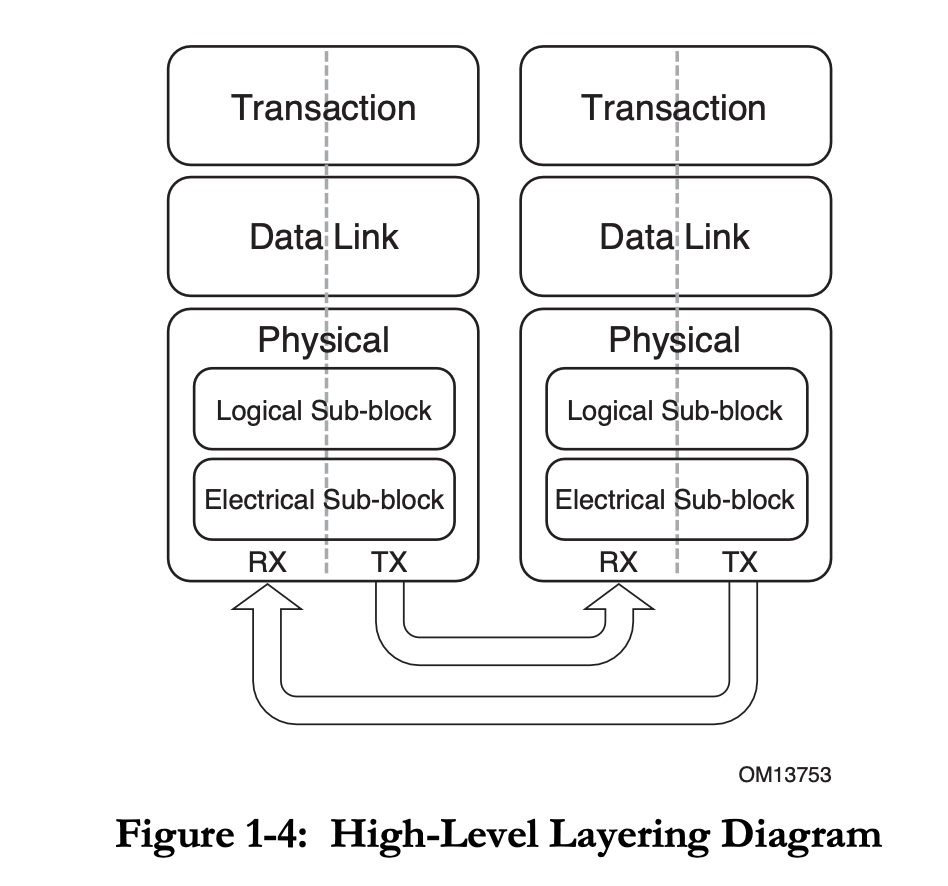

PCIe 学习笔记¶
本文的内容已经整合到知识库中。
背景¶
最近在知乎上看到 LogicJitterGibbs 的 资料整理：可以学习 1W 小时的 PCIe，我跟着资料学习了一下，然后在这里记录一些我学习 PCIe 的笔记。
下面的图片主要来自 PCIe 3.0 标准以及 MindShare 的 PCIe 3.0 书本。
分层¶
PCIe 定义了三个层：Transaction Layer，Data Link Layer，Physical Layer，和 TCP/IP 四层模型很像。PCIe 也是基于 Packet 传输的。

Transaction Layer¶
Transaction Layer 的核心是 Transaction Layer Packet(TLP)。TLP 格式：
即可选的若干个 Prefix，一个 Header，可选的 Data Payload，可选的 Digest。
Prefix 和 Header 开头的一个字节是 Fmt[2:0] 和 Type[4:0] 字段。Fmt 决定了 header 的长度，有无数据，或者这是一个 Prefix。
它支持几类 Packet：
- Memory: MMIO
- Read Request(MRd)/Completion(CplD)
- Write Request(MWr): 注意只有 Request，没有 Completion
- AtomicOp Request(FetchAdd/Swap/CAS)/Completion(CplD)
- Locked Memory Read(MRdLk)/Completion(CplDLk): Legacy
- IO: Legacy
- Read Request(IORd)/Completion(CplD)
- Write Request(IOWr)/Completion(Cpl)
- Configuration: 访问配置空间
- Read Request(CfgRd0/CfgRd1)/Completion(CplD)
- Write Request(CfgWr0/CfgWr1)/Completion(Cpl)
- Message: 传输 event
- Request(Msg/MsgD)
括号里的是 TLP Type，对应了它 Fmt 和 Type 字段的取值。如果 Completion 失败了，原来应该是 CplD/CplDLk 的 Completion 会变成不带数据的 Cpl/CplLk。
在 PCIe 3.0 标准的表 2-3 中列出了 TLP Type 以及对应的 Fmt 和 Type 编码。
TLP 路由有三个方法，决定了这个 TLP 目的地是哪里：
- Address-based: 32 位或 64 位地址，用于 Memory 和 IO 请求
- ID-based：lspci 看到的地址，也就是 Bus Device Function，用于 Configuration 请求
- Implicit：用于 Message 请求，路由方法：
- Routed to Root Complex
- Routed by Address: PCIe 3.0 标准中没有用这个路由方法的 Message
- Routed by ID
- Broadcast from Root Complex
- Local - Terminate at Receiver
- Gathered and router to Root Complex
Data Link Layer¶
Data Link Layer 的主要功能是进行 TLP 的可靠传输。它在传输 TLP 的时候，会在开头加上一个两字节的 Sequence Number，最后加上一个四字节的 LCRC（Link CRC）。

除了传输 TLP，Data Link Layer 还会传输 Data Link Layer Packet(DLLP)，类型包括：
- Ack DLLP: 告诉对方自己已经成功收到了 TLP
- Nak DLLP：告诉对方自己接收 TLP 失败，请重试
- InitFC1/InitFC2/UpdateFC DLLPs：流量控制
- PM_Enter_L1/PM_Enter_L23/PM_Active_State_Request_L1/PM_Request_Ack：用于电源管理
Data Link Layer 收到上层要发送 TLP 时候，首先拼接 Sequence Number 和 LCRC，然后会保存在 retry buffer 中，通过 Physical Layer 发送。从 Physical Layer 收到新的 TLP/DLLP 时，会检查它的完整性（CRC），如果正确，就向发送方发送一个 Ack DLLP，并把 TLP 提交给 Transaction Layer；如果不正确，就向发送方发送一个 Nak DLLP。如果收到了 Ack DLLP，就可以把相应的 TLP 从 retry buffer 中删掉；如果收到了 Nak DLLP，则要重传。这样就实现了 TLP 的可靠传输。
需要注意的是，TLP 和 DLLP 的区别：TLP 就像 IP，目的地址可能会跨越多跳；而 DLLP 是点对点地工作，所以一个 TLP 在转发的每一跳中，接受方都会发送一次 Ack DLLP。
Data Link Layer 的流量是 Credit-based 的：接受方会告诉发送方自己的 Buffer 还有多少空间（Credit），然后发送方根据 Credit 来控制是否继续发送 TLP。
配置¶
接触 PCIe 的时候可能会有一个疑惑，就是这些 Bus Device Function 都是怎么分配的，分配完之后，访问请求又是怎么路由的。
路由¶
首先回顾一下，上面提到了 TLP 的 Memory 和 IO 是根据地址路由，Configuration 是根据 Bus Device Function 路由，而 PCIe 大概是一个树形的结构，叶子结点就是 PCIe 设备，非叶子结点是桥或者交换机。回想一下，IP 的路由是按照最长前缀匹配，如果在 PCIe 中还这样做的话，又太过于复杂了，毕竟 PCIe 可以人为地设定每个设备的地址，让地址满足一定的连续性和局部性，这样路由选择就非常简单了。
观察 PCIe 标准中 7.3.3 Configuration Request Routing Rules，结合 MindShare 的书，看 Root Ports，Switches 和 Bridges 的要求，就知道 Configuration 请求是如何路由的：
- Configuration 请求只能由 Host Bridge 发起
- 如果 Configuration 请求是 Type0，那么这个请求的目的设备就是当前设备
- 如果 Configuration 请求是 Type1，
- 如果请求的 Bus Number 等于某一个 Downstream Port 的 Secondary Bus Number，则把 Configuration 请求转换为 Type0，然后发给该 Downstream Port
- 如果不等于，但是 Bus Number 属于某一个 Downstream Port 的 Secondary Bus Number 和 Subordinate Bus Number 之间，则不修改 Configuration 请求，发送给该 Downstream Port。
如果类比一下 IP，那么分组在中途路由器转发的时候就是 Type1，Type0 就是最后一跳。路由就是直接按照几个不重合的 Bus Number 区间进行判断，没有复杂的最长前缀匹配。但是又有一个问题，如果按照 Bus 路由，那同一个 Bus 下不同的 Device 咋办？这就像是以太网，最后一跳的时候，如果同一个链路上有多个设备，那么多个设备都能收到，每个设备根据自己的 Device 号判断是否是发给自己的。PCI（注意不是 PCIe）总线也类似。随着速度越来越高，通过交换机，以太网已经变成了点对点，所以很少见到一个链路上同时有多个设备的情况了。PCIe 也一样，所以根据 Bus 路由就足够了。至于 lspci 看到的那些 Device 不等于 0 的设备，要么是兼容 PCI 设备的，要么是虚拟的，在设备内部进行路由的，并不是真的有一个 PCIe link 连了多个物理设备。
所以简单理解一下，PCI 总线确实是一条总线，一条总线上很多设备。而 PCIe 实际上是一个网络，可以看作是很多个 PCI 总线连接在一起，可以把 Root Complex 或者 Switch 内部看成一个虚拟的有很多设备的 PCI 总线，而 PCIe Link 可以看成是只有一个设备的 PCI 总线。这样 PCIe 交换机可以看成若干个 PCI-PCI Bridge：

还有 MindShare 书中的图 3-5:

可以看到，这里的每一个 Bus 就是一个 PCI 总线，既有内部的虚拟 PCI 总线（Bus 0/2/6），也有 PCIe Link 充当的 PCI 总线（Bus 1/3/4/5/7/8/9）。在虚拟的 PCI 总线里，比如 PCIe Switch，一个 Device 对应一个 Downstream Port；而 PCIe Link 对应的 PCI 总线上就只有一个 Device。然后 PCIe Switch 的每个 Upstream Port 和 Downstream Port 里会记录三个 Bus Number：Primary(Pri)，Secondary(Sec) 和 Subordinate(Sub)。Primary 指的就是它上游直接连接的 PCI 总线编号，Sec 指的是下游直接连接的 PCI 总线编号，Sub 指的是它下游的最大 PCI 总线编号。
这样，收到 Type1 的时候，Switch 按照各个 Downstream Port 的 Sec 和 Sub 进行判断，如果目标 Bus Number 等于 Sec，就转换为 Type0 发出去；如果大于 Sec，但是小于或等于 Sub，就原样发出去。可以看到，从 Host Bridge 到每个设备都可以通过这样的方式一路转发。
既然 BDF 是把 Bus 划分为多个区间来路由的，那么 Memory 和 IO 请求也类似地可以对地址进行划分，变成多个区间，然后用类似的方法进行路由。
这些用于路由的区间上下界，可以在各个端口的 Type1 Configuration Space 中找到：

- 路由 Type1 Configuration Request：Primary Bus Number, Secondary Bus Number, Subordinate Bus Number
Request Bus Number == Secondary Bus Number: Type1 -> Type0Secondary Bus Number < Request Bus Number <= Subordinate Bus Number: Type1 -> Type1
- 路由 IO Request：
I/O Base <= IO Address <= I/O Limit - 路由 Prefetchable Memory Request：
Prefetchable Memory Base <= Memory Address <= Prefetchable Memory Limit - 路由 Non-Prefetchable Memory Request：
Memory Base <= Memory Address <= Memory Limit
而具体到每一个设备上，设备会提供若干个 BAR（Base Address Register），在枚举设备的时候，会给 BAR 分配地址，然后把设备的地址进行合并，记录到 Switch 上的 Base 和 Limit，然后一直递归，一路更新到 Root Complex。这样，就完成了地址分配，以及请求的路由。
分配¶
既然知道了 BDF 是如何路由的，那么接下来的问题是，怎么枚举设备和交换机，分配 Bus Number。这个事情在系统启动的时候会做（例如 UEFI），Linux 中也有相关的代码。下面就来对着 edk2 的源代码来看看它是怎么做的。
在 edk2 中，分配 Bus Number 的核心代码是 PciScanBus 函数：
/**
Scan pci bus and assign bus number to the given PCI bus system.
@param Bridge Bridge device instance.
@param StartBusNumber start point.
@param SubBusNumber Point to sub bus number.
@param PaddedBusRange Customized bus number.
@retval EFI_SUCCESS Successfully scanned and assigned bus number.
@retval other Some error occurred when scanning pci bus.
@note Feature flag PcdPciBusHotplugDeviceSupport determine whether need support hotplug.
**/
EFI_STATUS
PciScanBus (
IN PCI_IO_DEVICE *Bridge,
IN UINT8 StartBusNumber,
OUT UINT8 *SubBusNumber,
OUT UINT8 *PaddedBusRange
);
输入一个桥设备和初始的 Bus Number，输出 Subordinate Bus Number，也就是分配的最大的 Bus Number，以及 Padded Bus Range，例如如果要考虑热插拔的话，就需要预留一些 Bus Number。它在 PciRootBridgeEnumerator 函数中被调用，传入的是 RootBridgeDev。你可能也猜到了，这个函数可以递归调用，从 Root Bridge 开始往下，遇到新的桥设备的时候，就继续递归，然后根据下一层分配的 Bus Number 来计算上一层的 Subordinate Bus Number。
PciScanBus 首先枚举当前桥设备下的所有 Device 和 Function，因为当前的桥设备已经被分配了 Bus Number，所以是可以访问它下面的 Device 和 Function 的。
for (Device = 0; Device <= PCI_MAX_DEVICE; Device++) {
TempReservedBusNum = 0;
for (Func = 0; Func <= PCI_MAX_FUNC; Func++) {
//
// Check to see whether a pci device is present
//
Status =
PciDevicePresent(PciRootBridgeIo, &Pci, StartBusNumber, Device, Func);
if (EFI_ERROR(Status) && (Func == 0)) {
//
// go to next device if there is no Function 0
//
break;
}
if (EFI_ERROR(Status)) {
continue;
}
//
// Get the PCI device information
//
Status =
PciSearchDevice(Bridge, &Pci, StartBusNumber, Device, Func, &PciDevice);
if (EFI_ERROR(Status)) {
continue;
}
PciAddress = EFI_PCI_ADDRESS(StartBusNumber, Device, Func, 0);
if (IS_PCI_BRIDGE(&Pci) || IS_CARDBUS_BRIDGE(&Pci)) {
//
// For PPB
//
Status = PciAllocateBusNumber(Bridge, *SubBusNumber, 1, SubBusNumber);
if (EFI_ERROR(Status)) {
return Status;
}
SecondBus = *SubBusNumber;
Register = (UINT16)((SecondBus << 8) | (UINT16)StartBusNumber);
Address = EFI_PCI_ADDRESS(StartBusNumber, Device, Func,
PCI_BRIDGE_PRIMARY_BUS_REGISTER_OFFSET);
Status = PciRootBridgeIo->Pci.Write(PciRootBridgeIo, EfiPciWidthUint16,
Address, 1, &Register);
//
// If it is PPB, recursively search down this bridge
//
if (IS_PCI_BRIDGE(&Pci)) {
//
// Temporarily initialize SubBusNumber to maximum bus number to ensure
// the PCI configuration transaction to go through any PPB
//
Register = PciGetMaxBusNumber(Bridge);
Address = EFI_PCI_ADDRESS(StartBusNumber, Device, Func,
PCI_BRIDGE_SUBORDINATE_BUS_REGISTER_OFFSET);
Status = PciRootBridgeIo->Pci.Write(PciRootBridgeIo, EfiPciWidthUint8,
Address, 1, &Register);
Status = PciScanBus(PciDevice, SecondBus, SubBusNumber, PaddedBusRange);
if (EFI_ERROR(Status)) {
return Status;
}
}
//
// Set the current maximum bus number under the PPB
//
Address = EFI_PCI_ADDRESS(StartBusNumber, Device, Func,
PCI_BRIDGE_SUBORDINATE_BUS_REGISTER_OFFSET);
Status = PciRootBridgeIo->Pci.Write(PciRootBridgeIo, EfiPciWidthUint8,
Address, 1, SubBusNumber);
} else {
//
// It is device. Check PCI IOV for Bus reservation
// Go through each function, just reserve the MAX ReservedBusNum for one
// device
//
// OMITTED
}
if ((Func == 0) && !IS_PCI_MULTI_FUNC(&Pci)) {
//
// Skip sub functions, this is not a multi function device
//
Func = PCI_MAX_FUNC;
}
}
}
从代码中去掉了一些热插拔相关的代码，简单来说，它的思路如下：
- 枚举当前设备下的 Device 和 Function
- 如果找到了一个桥设备，为它分配一个新的 Bus Number
- 设置这个新的桥设备的 Primary Bus Number 为 Start Bus Number（也就是上一级的 Secondary Bus Number），Secondary Bus 是新分配的 Bus Number，Subordinate Bus Number 是最大值
- 这样设置完成后，相当于所有的在
[Secondary Bus Number, Max Bus Number]范围中的 Bus 请求都会路由到新的桥设备上 - 递归调用 PciScanBus，参数是新的桥设备，Start Bus Number 为新的 Secondary Bus Number
- 递归调用返回以后，新的桥设备下面所有的设备都分配到了自己的 Bus Number，这时候就可以知道准确的 Subordinate Bus Number 了，不再是刚才临时设置的 Max Bus Number，因此这时候再把准确的 Subordinate Bus Number 写入桥设备的 Subordinate Bus Number 中
- 枚举完所有设备以后，返回目前递归分配得到的最大的 Bus Number
这样整理出来一看，其实很清楚，这就是一个 DFS 算法，在搜索过程中，为了保证当前的结点可达，保证从 Root Bridge 到当前的结点路径上的 Bus Number 范围都是 [Secondary Bus Number, Max Bus Number]；当结点搜索完以后，再回溯，回溯的时候就知道了实际分配到多大的 Bus Number，这时候再填回 Subordinate Bus Number，最后保证这个树上每一层的 [Secondary Bus Number, Subordinate Bus Number] 区间不重合，且每个子结点的区间都包含于父结点的区间。
最后的结果，类似 MindShare 书中的这个图：

为了支持 PCIe 热插拔，或者可能会动态产生新设备的 SR-IOV，代码中做了相应的预留：
if (FeaturePcdGet(PcdPciBusHotplugDeviceSupport)) {
//
// If Hot Plug is supported,
// Get the bridge information
//
BusPadding = FALSE;
if (gPciHotPlugInit != NULL) {
if (IsPciHotPlugBus(PciDevice)) {
//
// If it is initialized, get the padded bus range
//
Status = gPciHotPlugInit->GetResourcePadding(
gPciHotPlugInit, PciDevice->DevicePath, PciAddress, &State,
(VOID **)&Descriptors, &Attributes);
if (EFI_ERROR(Status)) {
return Status;
}
BusRange = 0;
NextDescriptors = Descriptors;
Status = PciGetBusRange(&NextDescriptors, NULL, NULL, &BusRange);
FreePool(Descriptors);
if (!EFI_ERROR(Status)) {
BusPadding = TRUE;
} else if (Status != EFI_NOT_FOUND) {
//
// EFI_NOT_FOUND is not a real error. It indicates no bus number padding
// requested.
//
return Status;
}
}
}
}
if (FeaturePcdGet(PcdPciBusHotplugDeviceSupport) && BusPadding) {
//
// Ensure the device is enabled and initialized
//
if ((Attributes == EfiPaddingPciRootBridge) &&
((State & EFI_HPC_STATE_ENABLED) != 0) &&
((State & EFI_HPC_STATE_INITIALIZED) != 0)) {
*PaddedBusRange = (UINT8)((UINT8)(BusRange) + *PaddedBusRange);
} else {
//
// Reserve the larger one between the actual occupied bus number and padded
// bus number
//
Status = PciAllocateBusNumber(PciDevice, SecondBus, (UINT8)(BusRange),
&PaddedSubBus);
if (EFI_ERROR(Status)) {
return Status;
}
*SubBusNumber = MAX(PaddedSubBus, *SubBusNumber);
}
}
SR-IOV:
//
// It is device. Check PCI IOV for Bus reservation
// Go through each function, just reserve the MAX ReservedBusNum for one device
//
if (PcdGetBool(PcdSrIovSupport) && (PciDevice->SrIovCapabilityOffset != 0)) {
if (TempReservedBusNum < PciDevice->ReservedBusNum) {
Status = PciAllocateBusNumber(
PciDevice, *SubBusNumber,
(UINT8)(PciDevice->ReservedBusNum - TempReservedBusNum), SubBusNumber);
if (EFI_ERROR(Status)) {
return Status;
}
TempReservedBusNum = PciDevice->ReservedBusNum;
if (Func == 0) {
DEBUG((DEBUG_INFO, "PCI-IOV ScanBus - SubBusNumber - 0x%x\n",
*SubBusNumber));
} else {
DEBUG((DEBUG_INFO, "PCI-IOV ScanBus - SubBusNumber - 0x%x (Update)\n",
*SubBusNumber));
}
}
}
分配好 Bus 以后，就可以对所有设备进行 Configuration Request 了，后续的 Memory 和 IO 地址的分配和路由，也是类似地递归地进行分配，然后回溯的时候合并地址区间即可。
物理层¶
物理层编码上，PCIe 1.0 和 2.0 采用的是 NRZ 8b/10b，PCIe 3.0 到 5.0 用的是 NRZ 128b/130b，最新的 PCIe 6.0 和 7.0 则换成了 PAM4 FLIT。可以计算出每一代 x16 Lane 情况下的最大数据带宽：
- PCIe 1.0:
2.5 * 8 / 10 * 16 = 32 Gb/s - PCIe 2.0:
5.0 * 8 / 10 * 16 = 64 Gb/s - PCIe 3.0:
8.0 * 128 / 130 * 16 = 126 Gb/s - PCIe 4.0:
16.0 * 128 / 130 * 16 = 252 Gb/s - PCIe 5.0:
32.0 * 128 / 130 * 16 = 504 Gb/s - PCIe 6.0:
64.0 * 16 = 1024 Gb/s，如果考虑 FLIT 引入的开销，则是64.0 * 242 / 256 * 16 = 968 Gb/s - PCIe 7.0:
128.0 * 16 = 2048 Gb/s，如果考虑 FLIT 引入的开销，则是128.0 * 242 / 256 * 16 = 1936 Gb/s
PCIe 6.0¶
PCIe 6.0 引入了 PAM4 来替代原来的 NRZ，实现了波特率不变的情况下速度翻倍，并且不再使用 128b/130b，为了解决 PAM4 带来的更高的错误率，引入了 FEC，CRC 还有格雷码，以及新的 FLIT。
网上可以搜到关于 PCIe 的 PPT：https://pcisig.com/sites/default/files/files/PCIe%206.0%20Webinar_Final_.pdf 和 https://www.openfabrics.org/wp-content/uploads/2022-workshop/2022-workshop-presentations/206_DDasSharma.pdf，以及关于 FLIT 的博客：https://pcisig.com/blog/pcie%C2%AE-60-specification-webinar-qa-deeper-dive-flit-mode-pam4-and-forward-error-correction-fec
总结 FLIT 的要点：
- 每个 FLIT 固定长度 256 字节，其中 236 字节传输 TLP，6 字节传输 DLLP，8 字节传输 CRC，6 字节传输 FEC。
- 接受方接受到 FLIT 后，会尝试进行 FEC 解码，并且尝试修复错误，再进行 CRC 校验。如果中途出现了错误，则会发送一个 NAK 给发送方。
- 一个 TLP 可能跨越多个 FLIT，一个 FLIT 可能包括多个 TLP，根据 TLP 大小而定。TLP 不需要对齐到 FLIT 的开头或者结尾。
可以发现，FLIT 的 CRC 用了 8 个字节，不再需要原来 TLP 和 DLLP 中的 ECRC 和 LCRC。在之前的 PCIe 版本，TLP 的可选 Digest 是 4 个字节的 ECRC，TLP+DLLP 的 LCRC 是 4 字节。具体采用多少字节的 CRC，和目标的错误率，以及传输的字节数相关。
ATS¶
ATS（Address Translation Service）是在 PCIe 上给外设提供查询页表的方式，从而可以使用虚拟地址。标准可以在 https://composter.com.ua/documents/ats_r1.1_26Jan09.pdf 处下载，以及关于 ATS 的 PPT：https://composter.com.ua/documents/Address_Translation_Services.pdf。
它的整体工作方式如图：
就是在 Root Complex 和 Memory 之间设置一个 Translation Agent，负责查表，也就是 Page Table Walker。它会接收来自 PCIe 设备的地址翻译请求，然后它获取到页表地址后，根据虚拟地址去查内存中的页表。TLB（在标准中叫做 Address Translation Cache，ATC）是实现在 PCIe 设备侧的，而不是统一的 TLB，也不是 CPU 核心的 TLB。
为了支持 ATS，需要支持如下的操作：
- PCIe Device 向 Translation Agent 发送 Translation Request；Translation Agent 向 PCIe Device 回复 Translation Completion；
- 当页表出现变化的时候，需要通知 PCIe 设备端的 TLB，因此需要向 PCIe 设备发送 Invalidate Request Message；PCIe 设备完成 TLB 刷新后，回复一个 Invalidate Complete Message。
ATS 标准还定义了一个可选功能，就是 Page Request Interface（PRI），其实就是缺页的时候，设备可以去发送 Page Request，要求操作系统去分配一个物理页。这就像用户程序里 mmap 一个匿名的页，一开始是没有分配的，直到第一次访问的时候，出现缺页异常，然后 OS 分配一个物理页，再更新页表。这样的好处是用于 DMA 的物理页也可以 Swap 或者延迟分配。